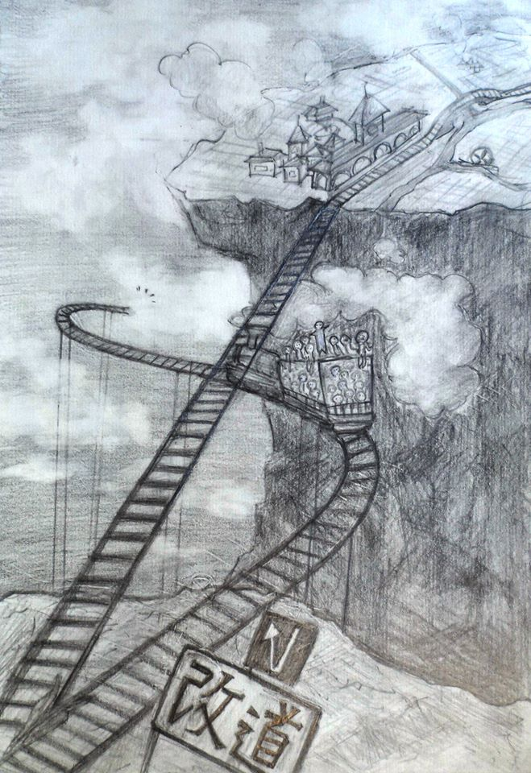

教改200年
全球資訊革命 ☞ 台灣教改展望
工業革命 ☞ 資訊革命
當機器能填補完所有的標準製程，
人，終於再度回到家庭、土地與社群🏡。
工業革命
效率的提升，依賴於：
零件
將作品分解成可替換的零件。如螺絲釘。
標準製程
將製程標準化，任何環節都可以快速交接。如作業員。
人的異化
「雇員」的角色，也成為：
零件
解雇之後，可被快速取代。
標準製程
只做製程的一部份，重覆去做。
「雇員」
「雇員」的角色，例如：
業務
專門賣不是自己生產的東西
廣告
專門賣不是自己生產的東西
裝配作業員
專門組裝不是自己設計的東西
異化的心理平衡
如何平衡被異化的感受：
集體認同
把「公司」「團體」當成「我」
那些是「我們公司」的作品
雖然不包含我的設計，也沒關係了
資方：你認同我的而不是你自己的成就，我就可以剝削你了
相對地位認同
把尊貴感建立與別人比較上
跟原本可以合作的人競爭
資方：這樣勞方就不會團結
數字認同
把滿足感建立在數字如「錢」「考績」「成績」上
數字高，就高興了。數字低，就難過了。
證照和學歷也屬此類
資方：操控數字就能操控人，這太容易了
工業時代的教育
國民教育基本是站在資方的立場，目的在實踐：
集體認同
- 制服、髮禁、學號
- 齊一課表、齊一進度
- 身體長時間受限
把「班級」「學校」當成「我」
那些是「我們班」的作品
雖然不包含我的設計，也沒關係了
資方：你認同我的而不是你自己的成就，我就可以剝削你了
相對地位認同
- 排名次
- 個別作業、個別應考而不能合作完成
把尊貴感建立與別人比較上
跟原本可以合作的人競爭
缺少自由時間讓人彼此連結
資方：這樣勞方就不會團結
數字認同
- 連續的考試
- 只有評分，沒有分享也沒有用途的作業
把滿足感建立在數字如「成績」「分數」「獎懲」上
數字高，就高興了。數字低，就難過了
證照和學歷也屬此類
資方：操控數字就能操控人，這太容易了
自主工作者
在工業化以前，存在很多自主工作者
擁有不算多但足夠的生產工具
小型工作室
有各自的風格和特色
沒有齊一的規格
創作「作品」而非「產品」
對創作的每個環節，都有參與，也都有概念
工業革命下
- 自主工作者受三方面打壓
- 研發能力：集資研發的品質戰
- 生產效率：量產效率的價格戰
- 通路管道：廣告文宣的行銷戰
- 政府政策：直接破壞生產工具與生活空間
資訊革命中
- 自主工作者重新抬頭
- 研發能力：知識交流網路 → 多人協作平台
- 生產效率：2D → 3D印表機
- 通路管道：創作與使用的互認 → 互信
- 政府政策：人民參與 → 政府開放
資訊革命中的
- 「雇員」被打壓
- 研發能力：全球人才的競爭壓力
- 生產效率：被機器取代的壓力
- 通路管道：資訊和機動性雙重不對等
- 政府政策：難以跨國保障人民
當機器會...✈
開車、講電話、煎蛋、栓螺絲、開礦、飛行、拍照。
有SOP的事都會做，世界就不需要「雇員」了。
創新、自主
才能做出還沒有SOP的事。
改道

教育
教育體制 ≈ 摹擬工作的場合🏭🏡
教育
工業時代的教育🏭 ≈ 異化體驗營🎃
教育
資訊時代的教育🏡 ≈ 自主工作體驗營💪
自主工作體驗營
解放與重建：
✘集體認同 → 友善社會🎅
我是我，我也尊重別人，愛護環境
我做我的作品，我分享我的作品
我的設計，有我的風格
自主工作：我可以從我的成就和對社會的助益，感受真實的意義
✘相對地位認同 → 自我覺知🔮
把踏實感建立在內心的澄明上
跟同儕合作
自主工作：總是有合作與學習的空間
✘數字認同 → 建立願景🗽
從願景出發
評價、證照、學歷、金錢...是工具不是目的
工具若妨礙目的，就捨棄那個工具
自主工作：希望的生活、希望的世界，著手參與創建
資訊時代的教育
解放與重建：
✘集體認同 → 友善社會🎅
- 用名字稱呼彼此，保有自己的樣子
- 自訂學習計畫，取代齊一課表
- 身體自由
- 跨地域 → 在地的互助社群，取代學校和班級
我是我，我也尊重別人，愛護環境
我做我的作品，我分享我的作品
我的設計，有我的風格
自主學習：我可以從我的成長、創作和對人與環境的助益，感受真實的意義
✘相對地位認同 → 自我覺知🔮
- 相互分享
- 共同創作，取代孤立應考
把踏實感建立在內心的澄明上
跟同儕合作
自主學習：總是有合作與學習的空間
✘數字認同 → 建立願景🗽
- 自訂目標，交互檢視
- 以學習記錄和實際作品，取代評分就丟的考卷作業
從願景出發
評價、證照、學歷、金錢...是工具不是目的
工具若妨礙目的，就捨棄那個工具
自主學習：希望的學習生活、希望的世界，著手參與創建